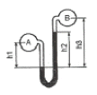
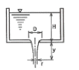
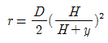
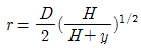
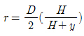
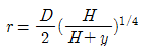
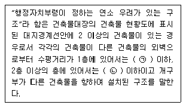

소방설비산업기사(기계) (2008-03-02 기출문제)
1과목: 소방원론
1. 다음 중 점화원이 될 수 없는 것은?
- 정전기
- 기화열
- 전기불꽃
- 마찰열
(정답률: 72%)

2. 다음 위험물 중 제2류 위험물인 가연성 고체에 해당하는 것은?
- 칼륨
- 나트륨
- 질산에스테르류
- 마그네슘
(정답률: 59%)
3. 연소의 기본 3요소라 할 수 없는 것은?
- 증발잠열
- 점화원
- 산소공급원
- 가연물
(정답률: 82%)
4. 부피비로 메탄 80%, 에탄 15%, 프로판 4%, 부탄1%인 혼합기체가 있다. 이 기체의 공기 중에서의 폭발한계는 약 몇 vol%인가? (단, 공기 중 단일 가스의 폭발한계는 메탄 5vol%, 에탄 2vol%, 프로판 2 vol%, 부탄 1.8 vol% 이다.)
- 2.2
- 3.8
- 4.9
- 6.2
(정답률: 63%)
5. 폴리염화비닐이 연소할 때 생성되는 연소가스에 해당 하지 않는 것은?
- HCL
- CO2
- CO
- SO2
(정답률: 34%)
6. 분말소화약제에 사용되는 제1인산암모늄의 열분해시 생성되지 않는 것은?
- H2O
- NH3
- HPO3
- CO2
(정답률: 50%)
7. "압력이 일정할 때 기체의 부피는 절대온도에 비례하여 변한다.“ 라고 하는 것을 무슨 법칙이라 하는가?
- 보일의 법칙
- 샤를의 법칙
- 아보가드로의 법칙
- 뉴톤의 제1법칙
(정답률: 41%)
8. 다음 중 패닉(panic) 현상의 직접적인 발생원인과 가장 거리가 먼 것은?
- 연기에 의한 시계제한
- 유독가스에 의한 호흡장애
- 경종의 발령에 의한 청각장애
- 외부와의 단절로 인한 고립
(정답률: 45%)
9. 소방시설의 분류에서 다음 중 소화설비에 해당하지 않는 것은?
- 스프링클러설비
- 수동식소화기
- 옥내소화전설비
- 연결송수관설비
(정답률: 45%)
10. 다음 가스 중 유독성이 커서 화재시 인명 피해시 위험성이 높은 가스는?
- N2
- O2
- CO
- H2
(정답률: 73%)
11. 다음 중 피난설비와는 관계가 없는 것은?
- 유도등
- 완강기
- 비상콘센트설비
- 휴대용비상조명등
(정답률: 48%)
12. 다음 중 코크스의 일반적인 연소형태에 해당하는 것은?
- 분해연소
- 증발연소
- 표면연소
- 자기연소
(정답률: 67%)
13. 공기 중의 산소농도를 희박하게 하여 소화하는 방법에 해당하는 것은?
- 파괴소화
- 제거소화
- 냉각소화
- 질식소화
(정답률: 73%)
14. 물 1g이 100℃에서 수증기로 되었을 때의 부피는 1기압을 기준으로 약 몇 L 인가?
- 0.3
- 1.7
- 10.8
- 22.4
(정답률: 24%)
15. 다음 중 메탄가스의 공기 중 연소범위(vol%)에 가장 가까운 것은?
- 2.1 ~ 9.5
- 5 ~ 15
- 2.5 ~ 81
- 4 ~ 75
(정답률: 62%)
16. B급 화재는 다음 중 어떤 화재인가?
- 금속화재
- 일반화재
- 전기화재
- 유류화재
(정답률: 69%)
17. 다음 한계산소농도에 대한 설명 중 틀린 것은?
- 가연물의 종류, 소화약제의 종류와 관계없이 항상 일정한 값을 갖는다.
- 연소가 중단되는 산소의 한계농도이다.
- 한계산소농도는 질식소화와 관계가 있다.
- 소화에 필요한 이산화탄소소화약제의 양을 구할 때 사용될 수 있다.
(정답률: 48%)
18. 가연물이 되기 쉬운 조건이 아닌 것은?
- 열전도율이 커야 한다.
- 뱔열량이 커야 한다.
- 활성화에너지가 작아야 한다.
- 산소와의 친화력이 큰 물질이어야 한다.
(정답률: 39%)
19. 건축물의 화재 발생시 열전달 방법과 가장 관계가 먼 것은?
- 전도
- 대류
- 복사
- 환류
(정답률: 75%)
20. 피난계획의 일반원칙 중 fail safe에 대한 설명으로 옳은 것은?
- 한 가지 피난기구가 고장이 나도 다른 수단을 이용 할 수 있도록 고려하는 것
- 피난설비를 반드시 이동식으로 하는 것
- 본능적 상태에서도 쉽게 식별이 가능하도록 그림이 나 색채를 이용하는 것
- 피난수단을 조작이 간편한 원시적인 방법으로 설계 하는 것
(정답률: 60%)
2과목: 소방유체역학
21. 관 속의 부속품을 통한 유체 흐름에서 관의 등가길이(상당길이)를 표현하는 식은? (단, 부차손실계수 K, 관 지름 d, 관 마찰계수 f )
- Kfd
- fd/K
- Kd/f
- Kf/d
(정답률: 60%)
22. 무게가 45000 N이고 체적이 5.3 m3 인 유체의 비중은?
- 0.623
- 0.682
- 0.866
- 0.901
(정답률: 66%)
23. 탄산수소나트륨(NaHCO3)이 열분해하여 생성되는 물질이 아닌 것은?
- 탄산나트륨
- 이산화탄소
- 수증기
- 암모니아
(정답률: 56%)
24. 소화용 펌프를 유량 1.5 , 양정 60 m, 회전수 1770rpm 으로 선정하였으나 공장배치가 변경되어 양정이 90 m 가 필요하게 되었다. 이 펌프를 몇 rpm으로 운전하면 변경된 양정과 거의 같은 효율로 운전될 수 있는가?
- 2230rpm
- 2655rpm
- 2168rpm
- 2073rpm
(정답률: 15%)
25. 열은 고운의 물체에서 저온의 물체로 옮겨가나, 반대의 현상은 일어나지 않음을 설명해 주는 열역학 법칙은?
- 열역학 0법칙
- 열역학 1법칙
- 열역학 2법칙
- 열역학 3법칙
(정답률: 60%)
26. 제2종 분말 소화약제의 주성분은?
- 탄산수소칼륨(KHCO3)
- 탄산수소나트륨(NaHCO3)
- 제1인산암모늄(NH4H2PO4)
- 탄산수소칼륨 + 요소
(정답률: 53%)
27. 유효 흡입양정(NPSH)과 가장 관계가 있는 것은?
- 수격작용
- 맥동현상
- 공동현상
- 체절압력
(정답률: 37%)
28. 소화약제의 구비조건이라 할 수 없는 것은?
- 가격이 싸야 한다.
- 환경오염이 없어야 한다.
- 전도성이 있어야 한다.
- 저장 안정성이 있어야 한다.
(정답률: 46%)
29. 지름이 3m에서 1.5m로 변하는 돌연히 축소하는 관에 6 m3/s 의 유량으로 물이 흐르고 있다. 이 때 손실동력(에너지 손실률)은 몇 kW인가? (단, 돌연 축소에 의한 손실계수 k는 0.3이다.)
- 9.5
- 10.4
- 11.7
- 12.3
(정답률: 45%)
30. 레이놀즈수의 물리적 의미는?
- 관성력/점성력
- 중력/점성력
- 표면장력/관성력
- 중력/압력
(정답률: 73%)
31. 고체, 유체에서 서로 접하고 있는 물질 분자 간에 열이 직접 이동하는 열전도와 관련된 법칙은?
- Fourier의 법칙
- Plank의 법칙
- Kirchhoff의 법칙
- Lamber의 법칙
(정답률: 54%)
32. 오리피스 지름이 10mm이고, 유량계수가 0.94인 살수 노즐로부터 방수량을 측정하였더니 매분 100L이었다면 방수압력(계기압력)은 몇 kPa 인가? (단, 물의 밀도는 1000 ㎏/m3이다.)
- 225.2
- 254.8
- 268.3
- 295.0
(정답률: 43%)
33. 액체의 비중을 측정하기 위하여 쇠로 만든 추(무게5N, 체적 1.5×10-4m3)를 액체 중에 넣고 무게를 재었더니 3.6 N이었다. 이 액체의 비중량은 몇 N/m3 인가? (단, 물의 비중량은 9800 N/m3 이다.)
- 467
- 9333
- 24000
- 33333
(정답률: 43%)
34. 이상유체를 가장 잘 설명한 것은?
- 과열유체
- 비점성, 압축성 유체
- 점성, 비압축성 유체
- 비점성, 비압축성 유체
(정답률: 78%)
35. 청정소화약제 중 HCFC BLEND A를 구성하는 성분이 아닌 것은?
- HCFC-22
- HCFC-124
- HCFC-123
- 아르곤(Ar)
(정답률: 53%)
36. 관 A에는 물이, 관 B에는 비중 0.9의 기름이 흐르고 있으며 마노미터의 액체는 비중이 13.6인 수은이다. h1 = 180㎜, h2 = 120㎜, h3 = 300㎜, 일 때 두 관의 압력차는 몇 Pa 인가?

- 3.34×103
- 2.39×104
- 2.5×103
- 2.5×104
(정답률: 46%)
37. 노즐에서 10 m/s 로서 수직방향으로 물을 분사할 때 상승높이는 몇 m 인가? (단, 저항 무시)
- 5.10
- 6.34
- 3.22
- 2.65
(정답률: 42%)
38. 다음 그림에서 마찰손실과 제반손실이 없다고 가정하고 표면장력의 영향도 무시한다면 분류에서 반지름 r의 값으로 옳은 것은?





(정답률: 22%)
39. 이상기체에 대한 다음의 설명 중 틀린 것은?
- 정적비열은 온도만의 함수이다.
- 정압비열은 정적비열보다 크다.
- 정압비열은 정적비열의 차는 온도의 함수이다.
- 원칙적으로 정압비열은 온도에 따라 그 값이 변한다.
(정답률: 24%)
40. 두 장의 종이 사이로 바람을 불면 두 종이가 서로 달라붙으려고 한다. 무슨 원리인가?
- 베르누이의 원리
- 파스칼의 원리
- 질량보존의 원리
- 달랑베르의 원리
(정답률: 40%)
3과목: 소방관계법규
41. 화재의 예방조치 등과 관련하여 불장난, 모닥불, 흡연, 화기(火氣)취급 그 밖에 화재예방상 위험하다고 인정되는 행위의 금지 또한 제한의 명령을 할 수 있는 자는?
- 행정자치부장관
- 시 ㆍ 도지사
- 소방본부장 또는 소방서장
- 경찰서장
(정답률: 48%)
42. 다음 중 인화성액체위험물(이황화탄소를 제외한다)의 옥외탱크저장소의 탱크 주위에 설치하는 방유제의 설치 기준으로 맞는 것은?
- 방유제의 높이는 0.5m 이상 2.0m 이하로 할 것
- 방유제내의 면적은 100,000 이하로 할 것
- 방유제안에 설치된 탱크가 2기 이상일 경우의 방유제의 용량은 용량이 최대인 탱크의 120% 이상으로 할것
- 방유제는 철근콘크리트 또는 흙으로 만들고, 위험물이 방유제의 외부로 유출되지 아니하는 구조로 할 것
(정답률: 25%)
43. 다음 중 소방시설업 등에 관한 사항으로 옳은 것은?
- 소방시설업의 영업정지 시 그 이용자에게 심한 불편을 줄 때에는 영업정지 처분에 갈음하여 3천만원 이하의 과징금을 부과할 수 있다.
- 소방시설의 공사와 감리는 동일인이 수행할 수 있다.
- 소방시설업은 어떠한 경우에도 지위를 승계할 수 없다.
- 소방시설업자는 소방시설업의 등록증 또는 등록수첩을 1회에 한하여 다른자에게 빌려 줄 수 있다.
(정답률: 43%)
44. 다음 중 저수조의 설치기준으로 옳지 않은 것은?
- 지면으로부터의 낙차가 4.5m 이하일 것
- 흡수부분의 수심이 0.5m 이상일 것
- 흡수관의 투입구가 사각형인 경우에는 한 변의 길이가 60cm 이하일 것
- 저수조에 물을 공급하는 방법은 상수도에 연결하여 자동으로 급수되는 구조일 것
(정답률: 22%)
45. 다음 중 소방활동구역의 설정권자는?
- 시 ㆍ 도지사
- 군수 ㆍ 구청장
- 소방대장
- 건설교통부장관
(정답률: 48%)
46. 소방설비산업기사의 자격을 취득한 후 몇 년 이상 소방실무경력이 있어야 소방시설관리사 시험의 응시자격이 있게 되는가?
- 1년
- 2년
- 3년
- 5년
(정답률: 34%)
47. 다음 중 특정소방대상물로서 의료시설에 해당되지 않는 것은?
- 장례식장
- 마약진료소
- 요양소
- 치과의원
(정답률: 35%)
48. 다음 ( ㉠ ), ( ㉡ ) 에 알맞은 것은?

- ㉠ 3m, ㉡ 5m
- ㉠ 5m, ㉡ 8m
- ㉠ 6m, ㉡ 8m
- ㉠ 6m, ㉡ 10m
(정답률: 58%)
49. 관계인의 정당한 업무를 방해하거나 화재 조사를 수행하면서 알게된 비밀을 다른 사람에게 누설한 경우의 벌칙으로 알맞은 것은?
- 1천만원 이하의 벌금
- 500만원 이하의 벌금
- 300만원 이하의 벌금
- 200만원 이하의 벌금
(정답률: 49%)
50. 특정방화대상물의 관계인이 방화관리업무를 수행하지 않은 사유로 과태료 처분을 받았다. 만일 과태료 처분에 불복이 있는 경우 그 처분의 고지를 받은 날부터 며칠 이내에 부과권자에게 이의를 제기할 수 있는가?
- 120일 이내
- 90일 이내
- 60일 이내
- 30일 이내
(정답률: 59%)
51. 특정소방대상물의 관계인이 피난시설 또는 방화시설의 폐쇄 ㆍ 훼손 ㆍ 변경 등의 행위를 했을 때 과태료 처분으로 알맞은 것은?
- 100만원 이하
- 200만원 이하
- 300만원 이하
- 500만원 이하
(정답률: 24%)
52. 다음 중 방염대상물품이 아닌 것은?
- 카페트
- 창문에 설치하는 브라인드
- 두께가 2mm 미만인 벽지류로서 종이벽지
- 전시용 합판 또는 섬유판
(정답률: 39%)
53. 소방시설공사업법상 소방시설업에 속하지 않는 것은?
- 소방시설점검업
- 소방시설설계업
- 소방시설공사업
- 소방공사감리업
(정답률: 60%)
54. 다음 중 소방기본법상 소방대상물에 속하지 않는 것은?
- 건축물
- 산림
- 선박건조구조물
- 철도
(정답률: 34%)
55. 소방체험관의 설립 ㆍ 운영권자는?
- 행정자치부장관
- 소방방재청장
- 시 ㆍ 도지사
- 소방본부장 및 소방서장
(정답률: 44%)
56. 소방시설별 하자보수 보증기간이 다른 것은?
- 피난기구
- 비상경보설비
- 무선통신보조설비
- 자동화재탐지설비
(정답률: 41%)
57. 다음 소방시설 중 “소화활동설비”가 아닌 것은?
- 상수도소화용수설비
- 무선통신보조설비
- 연소방지설비
- 제연설비
(정답률: 57%)
58. 다음 중 대통령령으로 정하는 소방용 기계 ㆍ 기구에 속하지 않는 것은?
- 방염제
- 소화약제에 따른 간이소화용구
- 가스누설경보기
- 휴대용비상조명등
(정답률: 54%)
59. 제 4류 위험물의 성질로 알맞은 것은?
- 인화성 액체
- 산화성 고체
- 가연성 고체
- 산화성 액체
(정답률: 43%)
60. 관계인이 화재예방과 화재 등 재해발생시 비상조치를 위하여 예방 규정을 정하여야 하는 옥외저장소는 지정수량의 몇 배 이상의 위험물을 저장하는 것을 말하는가?
- 10배
- 100배
- 150배
- 200배
(정답률: 55%)
4과목: 소방기계시설의 구조 및 원리
61. 이산화탄소 소화설비용 가스압력식 기동장치의 기동용 가스용기에 대한 설치 기준 중 잘못된 것은?
- 용기의 용적은 1[L] 이상으로 할 것
- 용기의 충전비는 1.5 이상일 것
- 용기에는 1.5 MPa 이상 2.5 MPa 이하의 압력에서 작동하는 안전장치를 설치할 것
- 용기는 25 MPa 이상의 압력에 견딜 수 있는 것으로 할 것
(정답률: 50%)
62. 제연설비에 설치되는 다음 기기 중 화재감지기와 연동되지 않아도 되는 것은?
- 가동식의 벽
- 댐퍼
- 분배기
- 배출기
(정답률: 50%)
63. 연면적 3000 m2인 지하가에 폐쇄형 스프링클러 설비가 최대 기준으로 설치되어 있을 경우에 스프링클러 설비에 필요한 펌프의 1분당 송수량은 얼마 이상이어야 하는가?
- 800 [L/min]
- 1600 [L/min]
- 2400 [L/min]
- 3200 [L/min]
(정답률: 50%)
64. 물분무 소화설비 가압송수장치의 토출측 배관에 설치할 필요성이 없는 것은?
- 연성계
- 펌프성능 시험배관
- 수온상승 방지를 위한 순환배관
- 체크밸브
(정답률: 32%)
65. 완강기의 구성요소를 크게 3가지로 분류할 수 있다. 다음 중 완강기의 구성요소가 아닌 것은?
- 속도 조절기
- 로프
- 벨트 및 후크
- 보호망
(정답률: 66%)
66. 옥내소화전 설비의 배관에 관한 설명으로서 틀린 것은?
- 배관내 사용압력이 1.2 MPa 이상일 경우 압력배관 용탄소강관이나 이와 동등 이상의 강도, 내식성 및 내열성을 가져야 한다.
- 펌프의 흡입측 배관에 여과장치(스트레이너)를 설치한다.
- 수직주배관(입상관)의 구경은 50mm 이상을 사용한다.
- 토출측 주배관의 유속이 3m/s 이상이 될 수 있는 크기의 배관으로 한다.
(정답률: 50%)
67. 펌프 송풍기 등의 건물바닥에 대한 진동을 줄이기위해 사용하는 방진재료가 아닌 것은?
- 방진고무
- 워터 햄머쿠션
- 금속스프링
- 공기스프링
(정답률: 35%)
68. 분말 소화약제 저장 용기의 경우 가압식의 것에 있어서는 최고 사용 압력의 몇 배 이하의 기준에서 작동하는 안전밸브를 설치하여야 하는가?
- 2.2배
- 2.5배
- 1.8배
- 2.0배
(정답률: 70%)
69. 물(수계)소화설비의 배관에 개폐밸브로서 개폐표시형 밸브 (OUTSIDE STEM & YORK VALVE)를 설치하는 이유로서 가장 적합한 것은?
- 개폐조작이 용이하기 때문
- 개폐상태 여부를 용이하게 육안판별하기 위해서
- 소방관의 수시점검을 위한 편의를 제공하기 위해서
- 밸브의 고장을 가급적 막기 위해서
(정답률: 63%)
70. 다음 할로겐화합물 소화설비의 분사헤드에 대한 설치기준에서 맞는 것은?
- 전역방출방식에서 할론1301를 방사하는 헤드의 방사 압력은 0.9 MPa 이상이다.
- 전역방출방식에서 기준저장량의 소화약제를 20초 이내에 방사할 수 있도록 한다.
- 국소방출방식에서 기준저장량의 소화약제를 20초 이내에 방사할 수 있도록 한다.
- 호스릴방식에서 방호대상물의 각 부분으로부터 하나의 호스접결구까지의 수평거리는 30m 이하가 되도록한다.
(정답률: 49%)
71. 물분무 소화설비로서 다음 설명 중 옳지 않은 것은?
- 분사된 물은 표면적이 크기 때문에 열을 흡수하기 쉽다.
- 화원으로 산소공급을 차단하는 질식효과를 가져온다.
- 분사된 물은 절연성이 양호하므로 전기 화재에도 이용 가능하다.
- 분사된 물은 유화층을 형성하여 유류화재에는 부적당하다.
(정답률: 56%)
72. 소화용수설비의 소화수조 또는 저수조의 설치기준이다. 옳지 못한 것은?
- 지하에 설치하는 소화용수설비의 흡수관 투입구는 그 한 변이 0.6m 이상이거나 직경 0.6m 이상인 것으로한다.
- 흡수관 투입구는 소요수량이 80 m3미만인 것에 있어서는 1개 이상, 80 m3이상인 것에 있어서는 2개 이상을 설치한다.
- 채수구는 소요수량이 40 m3이상 100 m3미만인 것에는 3개 설치한다.
- 소방용 호스 또는 소방용 흡수관에 사용하는 채수구는 구경 65mm 이상의 나사식 결합 금속구를 설치한다.
(정답률: 50%)
73. 스프링클러 배관에 설치하는 행가에 대한 설명으로 옳지 않은 것은?
- 가지배관에서 헤드간의 간격이 3.5m를 초과하는 경우에는 3.5m 이내 마다 행가를 1개 이상 설치 할 것
- 가지배관에서 상향식헤드와 행가 사이에는 8cm 이상 간격을 둘 것
- 교차배관에서 가지배관과 가지배관 사이의 거리가 3.5m를 초과하는 경우에는 3.5m 이내마다 행가를 1개 이상 설치할 것
- 가지배관에는 헤드의 설치지점 사이마다 1개 이상의 행가를 설치 할 것
(정답률: 48%)
74. 다음 중 지하층이나 무창층 또는 밀폐된 거실로서 바닥면적이 20 m2미만의 장소에 사용할 수 있는 소화기는? (단, 배기를 위한 유효한 개구부가 없는 장소인 경우임)
- 할론 1211 소화기
- 할론 1301 소화기
- 이산화탄소 소화기
- 할론 2402 소화기
(정답률: 70%)
75. 연결살수설비의 전용헤드는 천장 또는 반자의 각부분으로부터 하나의 살수헤드까지의 수평거리를 몇 m이하로 하여야 하는가?
- 2.1m
- 2.3m
- 3.2m
- 3.7m
(정답률: 54%)
76. 폐쇄형 스프링클러헤드에서 설치장소의 최고 주위 온도와 헤드의 표시온도를 바르게 나타낸 것은?
- 39℃ 미만, 70℃ 미만
- 39℃ 이상 64℃ 미만, 70℃ 이상 110℃ 미만
- 64℃ 이상 106℃ 미만, 110℃ 이상 162℃ 미만
- 106℃ 이상, 162℃ 이상
(정답률: 40%)
77. 소화기를 설치할 때는 바닥으로부터 몇 m 이하의 높이에 설치하는 것이 가장 이상적인가?
- 1.5 m 이하
- 2.0 m 이하
- 2.5 m 이하
- 3.0 m 이하
(정답률: 83%)
78. 소방대상물의 보가 있는 경우에 포헤드와 보의 하단의 수직거리가 0.2m 일 때 포헤드와 보의 수평거리는?
- 0.75 m 미만
- 0.75 m 이상 1m 미만
- 1 m 이상 1.5 m 미만
- 1.5 m 이상
(정답률: 36%)
79. 다음 중 스케줄 번호는 무엇을 의미 하는가?
- 강관의 길이
- 강관의 제조 방법
- 강관의 두께
- 강관의 재질
(정답률: 78%)
80. 옥외소화전(방수구) 주변 몇 m 이내에 소화전함을 설치해야 하며, 호스구경은 몇 mm 인가?
- 3m, 40mm
- 3m, 65mm
- 5m, 40mm
- 5m, 65mm
(정답률: 52%)